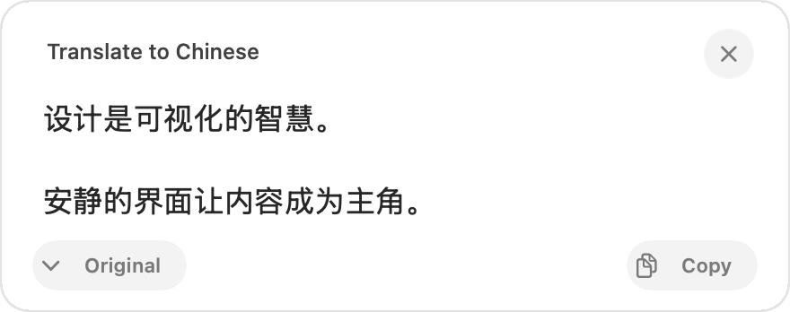
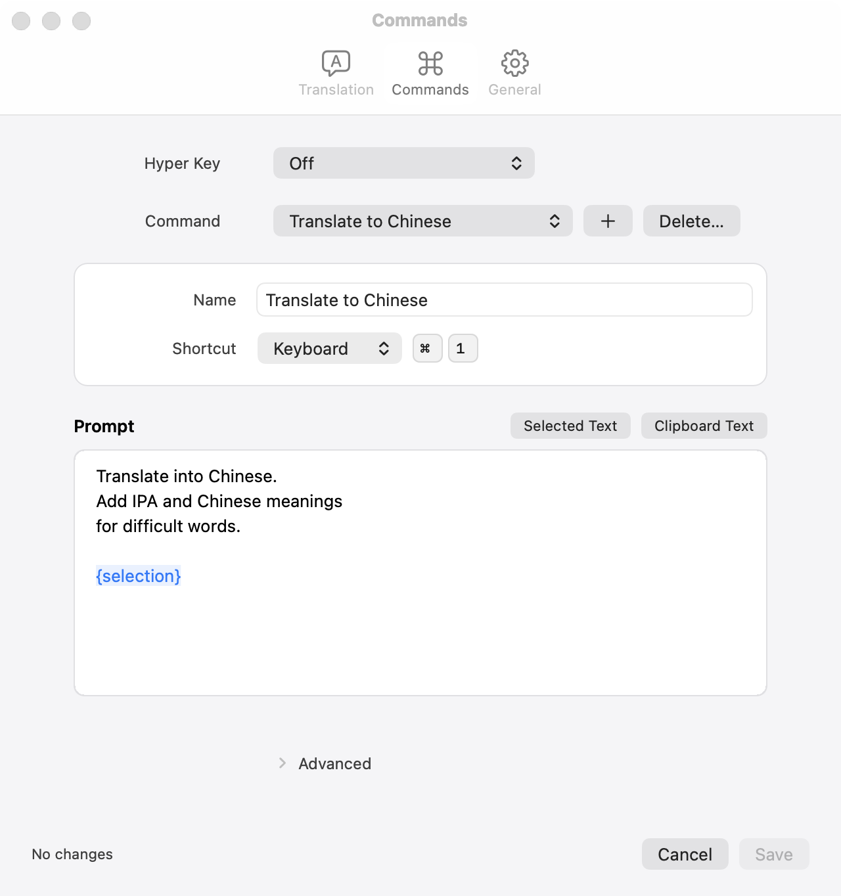

Your endpoint
Enter a Base URL, API key, and model for an OpenAI-compatible service. Text is sent to that chosen endpoint.
Native menu-bar translator for macOS
Run a saved translation command from any app with a keyboard shortcut, Hyper Key, or an optional pointer hold. yiyi sends the text to the OpenAI-compatible endpoint you choose.

How it works
Select text in the app you are using, invoke yiyi, then read or copy the result. Accessibility permission enables selection capture; without it, clipboard-based commands remain available.
Highlight the words you want to translate.
Use a keyboard shortcut, Hyper Key, or the optional pointer gesture.
Read the result in a compact native panel and return to your work.
Your commands
Save commands with their own name, shortcut, and prompt. Insert
{selection} for selected text or
{clipboard} when the clipboard is the intended input.
Review everything before Save; Cancel leaves the active setup
unchanged.

More than keys
As an experimental, opt-in trigger, hold Option and the primary mouse or trackpad click for 0.45 seconds, then release. Moving to drag cancels the gesture, so ordinary selection stays ordinary.
A small native tool
Enter a Base URL, API key, and model for an OpenAI-compatible service. Text is sent to that chosen endpoint.
Commands and credentials stay in local configuration. Inline keys are plaintext in an owner-only file, not Keychain. Captured text is not written to diagnostic logs.
Use an ordinary modifier shortcut, a right-side leader key, or an existing external ⌃⌥⇧⌘ remap.
Built entirely with macOS frameworks, so it starts instantly and stays out of the way.
Connect your endpoint, choose how to invoke it, and keep reading where you are.
Get yiyi on GitHub